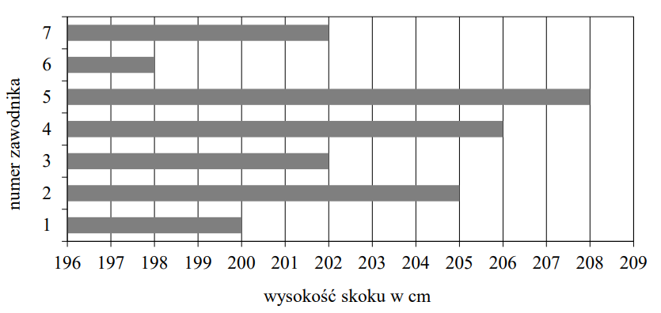

Egzamin ósmoklasisty 2020 czerwiec
Rozwiązania zadań zacznę publikować jak tylko CKE
udostępni arkusz.
Rowerzysta uczestniczył w rajdzie rowerowym. Całą trasę rajdu pokonał w ciągu
czterech dni. W tabeli poniżej przedstawiono długości kolejnych etapów trasy, które przebył każdego
dnia.
| Dzień |
Długość kolejnych etapów trasy (w km) |
| poniedziałek |
26 |
| wtorek |
27 |
| środa |
21 |
| czwartek |
31 |
Uzupełnij poniższe zdania. Wybierz odpowiedź spośród oznaczonych literami A i B
oraz odpowiedź spośród oznaczonych literami C i D.
W poniedziałek i wtorek rowerzysta
przejechał łącznie
A
B
długości całej trasy rajdu.
A.więcej niż \(50\%\)
B.mniej niż \(50\%\)
W środę rowerzysta przejechał
C
D
długości całej trasy rajdu.
C.\( \frac{1}{4} \)
D.\( \frac{1}{5} \)
A D
Wartość wyrażenia \(\frac{5}{7}-\frac{2}{7}\cdot \left(-\frac{3}{2}\right)\) jest
równa
A.\( -\frac{15}{14} \)
B.\( -\frac{9}{14} \)
C.\( \frac{2}{7} \)
D.\( \frac{8}{7} \)
D
Trzej właściciele firmy – Adam, Janusz i Oskar – kupili samochód dostawczy za kwotę
\(154\ 000\) zł. Kwoty wpłacone przez Adama, Janusza i Oskara są – odpowiednio – w stosunku \(2 : 3
: 6\).
Jaką kwotę wpłacił Janusz? Wybierz właściwą odpowiedź spośród podanych.
A.\( 14\ 000 \) zł
B.\( 28\ 000 \) zł
C.\( 42\ 000 \) zł
D.\( 84\ 000 \) zł
C
Na przedstawionym poniżej fragmencie osi liczbowej oznaczono cztery punkty: \(R, S,
T, W\). Współrzędne punktów \(S\) i \(W\) są równe \(287\) i \(311\). Odcinek \(RW\) jest podzielony
na pięć równych części. Oceń
prawdziwość podanych zdań. Wybierz
P, jeśli zdanie jest prawdziwe, albo
F – jeśli jest
fałszywe.
| Współrzędne punktów \(R\) i \(T\) różnią się o \(24\). |
P |
F |
| Współrzędna punktu \(R\) jest równa \(271\). |
P |
F |
PP
Pociąg o długości \(l = 150\) m przejechał przez tunel o długości \(d = 350\) m ze
stałą prędkością \(v=20 \frac{\text{m}}{\text{s}}\). Ile czasu upłynęło od momentu wjazdu czoła pociągu do
tunelu (rysunek 1.) do momentu wyjazdu z tunelu końca ostatniego wagonu (rysunek 2.)? Wybierz
właściwą odpowiedź spośród podanych.
A.\( 7{,}5 \) s
B.\( 17{,}5 \) s
C.\( 25 \) s
D.\( 36 \) s
C
Wartość wyrażenia \(\sqrt{3}(\sqrt{27}-\sqrt{12})\) jest równa
A.\( \sqrt{3} \)
B.\( 3 \)
C.\( \sqrt{45} \)
D.\( \sqrt{69} \)
B
Która z podanych niżej liczb
nie jest równa \(3^{15}\)?
A.\( 3\cdot 3^{14} \)
B.\( 3^9\cdot 3^6 \)
C.\( 3^{17}:9 \)
D.\( (3^5)^3 \)
E.\( 9^{15}:3 \)
E
Na diagramie przedstawiono wyniki (w centymetrach) uzyskane przez zawodników
uczestniczących w finale konkursu skoku wzwyż.  Ilu zawodników uzyskało wynik wyższy od średniej arytmetycznej wyników
wszystkich uczestników finału tego konkursu?
A.\( 2 \)
B.\( 3 \)
C.\( 4 \)
D.\( 5 \)
B
Na kartonowej siatce sześcianu Mariusz nakleił 6 figur tak, jak pokazano na
rysunku. Następnie z tej siatki skleił kostkę. Który rysunek przedstawia kostkę sklejoną przez Mariusza?
C
Dany jest wzór opisujący pole trapezu: \(P=\frac{(x+y)\cdot h}{2}\), gdzie \(x\) i
\(y\) oznaczają długości podstaw trapezu, a \(h\) oznacza wysokość trapezu. Którym równaniem opisano
\(x\) wyznaczone poprawnie z tego wzoru?
A.\( x=\frac{P}{2}-hy \)
B.\( x=\frac{P}{2h}-y \)
C.\( x=2P-hy \)
D.\( x=\frac{2P}{h}-y \)
D
Kąt ostry rombu ma miarę \(60^\circ \), a bok tego rombu ma długość równą \(4\)
cm.
Oceń prawdziwość podanych zdań. Wybierz
P, jeśli zdanie jest prawdziwe, albo
F – jeśli jest fałszywe.
| Krótsza przekątna dzieli ten romb na dwa trójkąty równoboczne. |
P |
F |
| Pole tego rombu jest równe \(8\sqrt{3}\ \text{cm}^2\). |
P |
F |
PP
Na kartce w kratkę Tomek narysował według pewnej reguły cztery łamane (patrz
rysunek). Długości tych
łamanych zapisał w tabeli.
| Numer łamanej |
I |
II |
III |
IV |
| Długość łamanej |
3 |
8 |
15 |
24 |
Kolejne łamane – od numeru V – Tomek rysował zgodnie z tą samą regułą.
Uzupełnij poniższe zdania. Wybierz odpowiedź spośród oznaczonych literami A i B oraz odpowiedź
spośród oznaczonych literami C i D.
Łamana o długości \(48\) ma numer
A
B
Łamana o numerze VIII ma długość
C
D
A D
W grudniu, w trzech sklepach sportowych: Alfa, Beta i Gamma, sprzedawano łyżwy
figurowe w tej samej cenie. Na wiosnę w każdym sklepie ogłoszono obniżkę cen tych łyżew. Poniżej
przedstawiono oferty tych sklepów. Po obniżce cena łyżew figurowych była
A.najniższa w sklepie Alfa.
B.najniższa w sklepie Beta.
C.najniższa w sklepie Gamma.
D.taka sama w trzech sklepach.
A
Dany jest trójkąt równoboczny \(ABC\) o boku długości \(10\) cm. W tym trójkącie
poprowadzono wysokość \(CD\). Obwód trójkąta \(ADC\) jest równy
A.\( 10\sqrt{3}\) cm
B.\( 20\sqrt{3} \) cm
C.\( (5+5\sqrt{3})\) cm
D.\( 15+5\sqrt{3})\) cm
D
W trójkącie \(KLM\) poprowadzono wysokość \(KN\). Długości niektórych odcinków
opisano za pomocą wyrażeń algebraicznych: \(ǀKLǀ = 2y\), \(ǀLMǀ = 2x\), \(ǀKNǀ = k + 1\). Pole trójkąta \(KLM\) opisano
wyrażeniem
A.\( x(k+1) \)
B.\( 2x(k+1) \)
C.\( y(k+1) \)
D.\( 2y(k+1) \)
A
W trójkącie o kątach wewnętrznych \(\alpha , \beta , \gamma \) miara kąta \(\alpha
\) jest równa różnicy miar dwóch pozostałych kątów. Uzasadnij, że ten trójkąt jest prostokątny.
Na rysunku przedstawiono układ miejsc w przedziale ośmioosobowym wagonu kolejowego
i zaznaczono kierunek jazdy pociągu. Edyta z Agnieszką planują zakup biletów na wspólną podróż. Wszystkie miejsca w
przedziale są wolne. Edyta chce siedzieć przy oknie, natomiast Agnieszka chce siedzieć przodem do
kierunku jazdy. Podaj wszystkie możliwości wyboru miejsc spełniające jednocześnie powyższe warunki.
\(7\)
W domu kultury zorganizowano konkurs recytatorski. Dla uczestników kupiono nagrody:
książki i e-booki. Książki stanowiły \(\frac{2}{3}\) liczby kupionych nagród. E-booków było o \(8\)
mniej niż książek. Ile kupiono książek?
\(16\)
W zakładzie krawieckim są szyte poduszki dla zwierząt domowych. Praca w tym
zakładzie trwa pięć dni w tygodniu – od poniedziałku do piątku – po \(7\) godzin dziennie. W 2020
roku 1 marca wypadł w niedzielę i w tym miesiącu nie było żadnych dni wolnych oprócz sobót i
niedziel. W ciągu każdej godziny pracy szyto średnio \(3\) poduszki. Ile poduszek uszyto w tym
zakładzie w marcu 2020 roku?
\(462\)
Boisko szkolne ma kształt prostokąta o wymiarach \(46\) m i \(30\) m. Postanowiono
posiać na nim trawę. Do obsiania \(40\) m\(^2\) powierzchni jest potrzebny jeden kilogram nasion
trawy. Nasiona trawy są sprzedawane tylko w \(10\)-kilogramowych workach, po \(163\) zł za jeden
worek. Oblicz koszt zakupu nasion trawy potrzebnych do obsiania tego boiska.
\(652\)
Podstawą ostrosłupa o wysokości \(H\) jest kwadrat. Na rysunku przedstawiono siatkę
i podano długości niektórych krawędzi tego ostrosłupa. Oblicz objętość tego ostrosłupa.
\(100\)